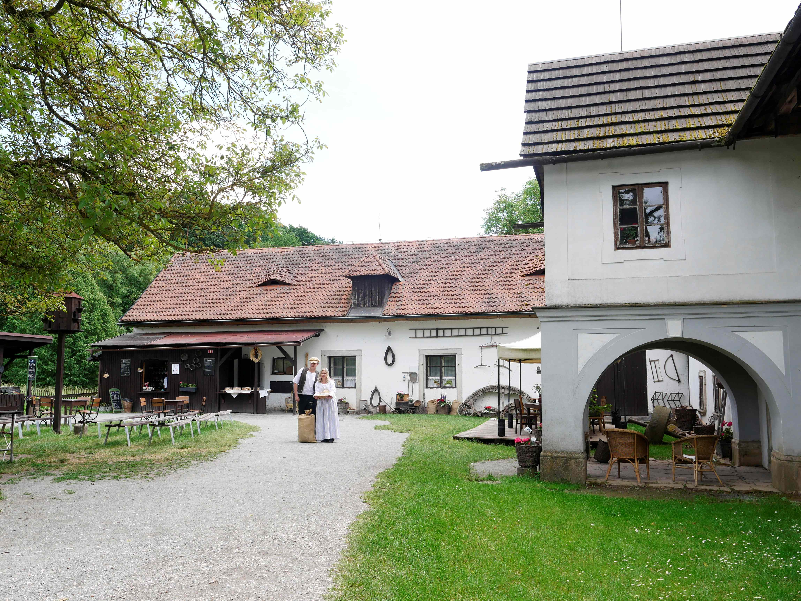
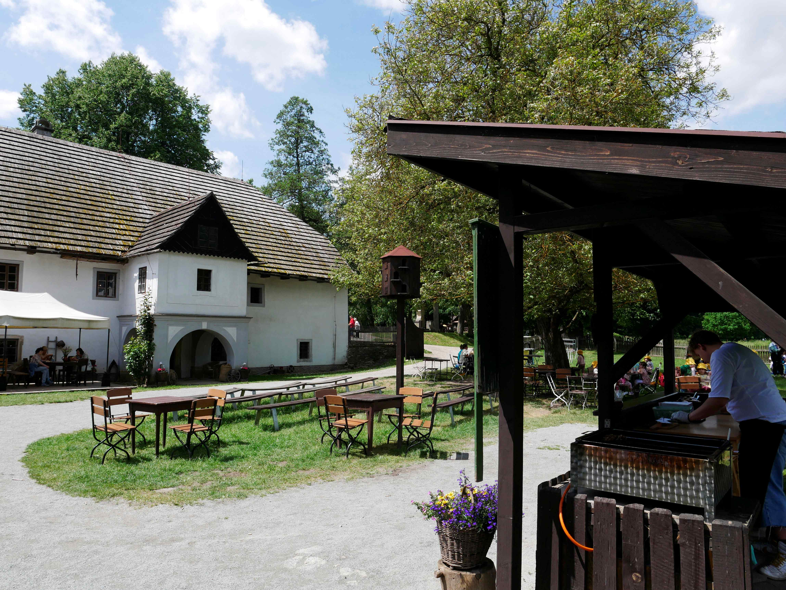
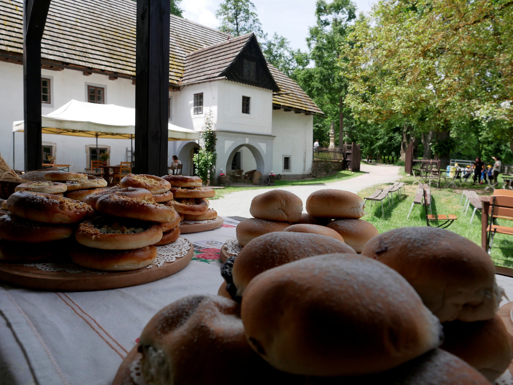
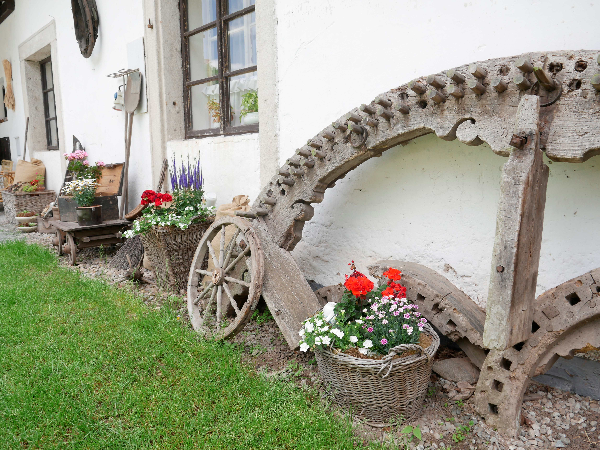
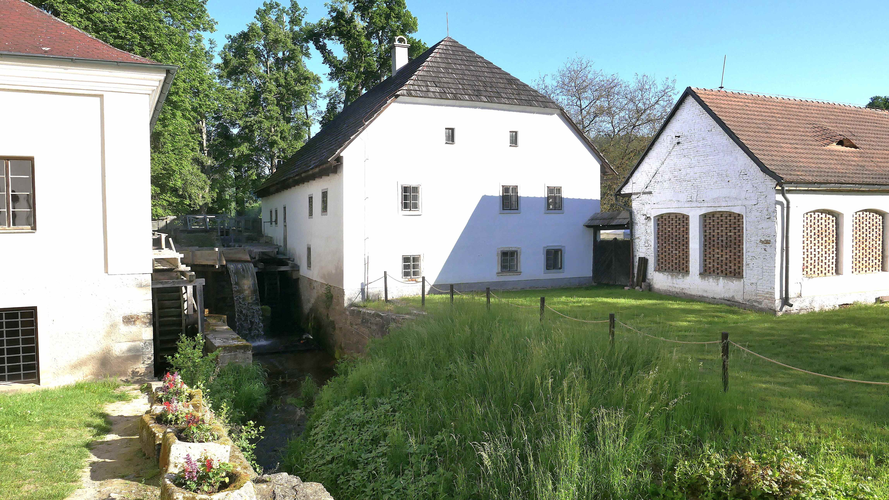
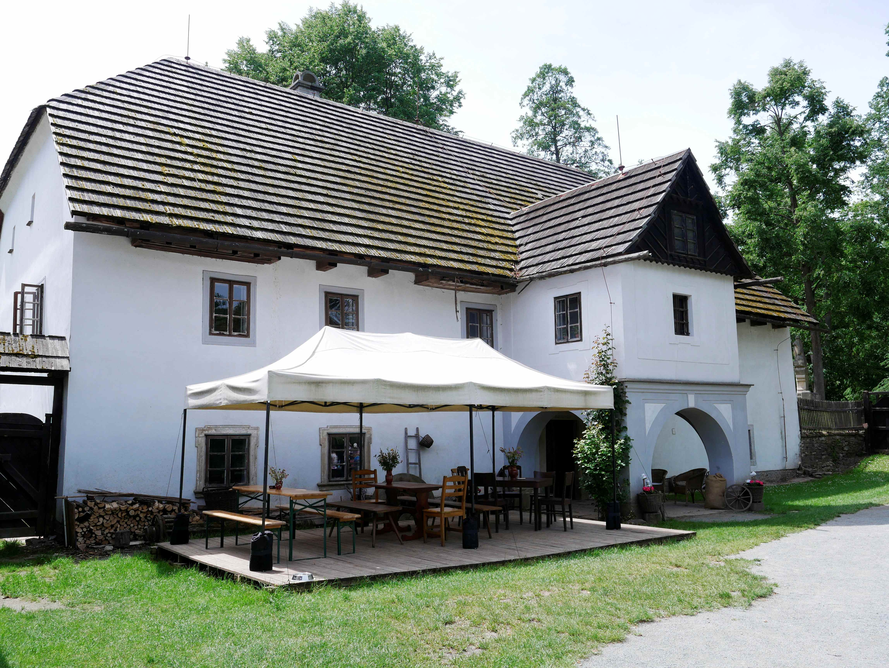
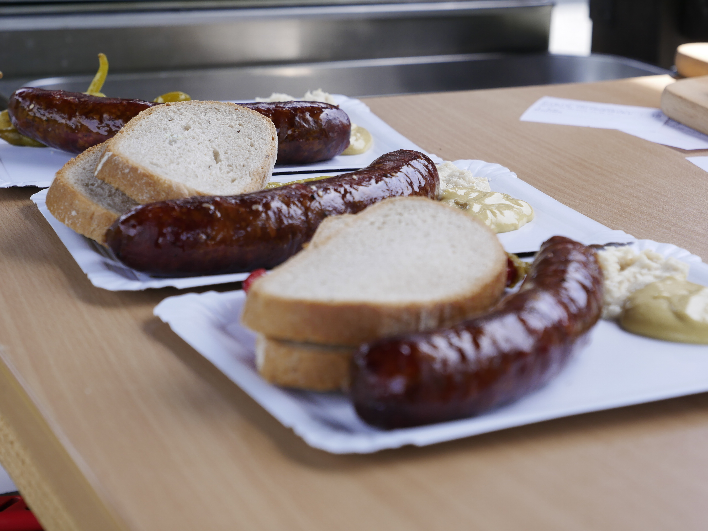
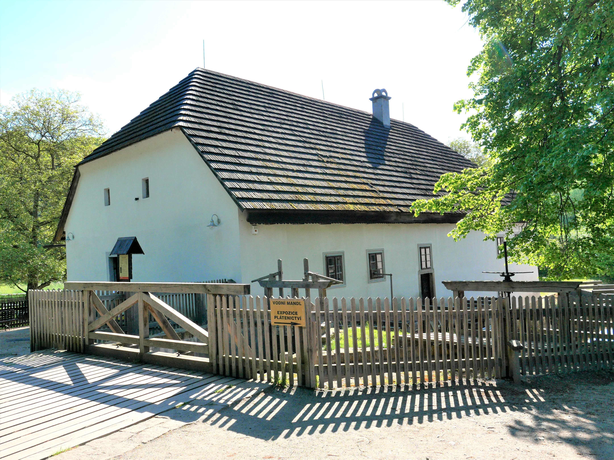
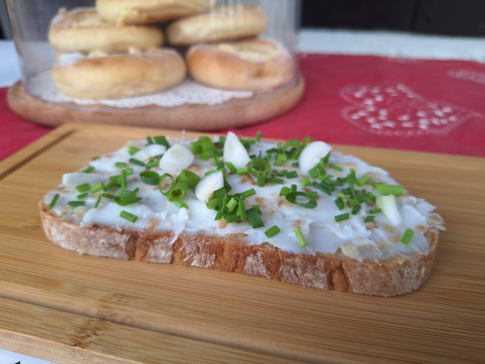

Vítejte v příjemném prostředí Rudrova mlýna – občerstvení v srdci Ratibořic. Zastavte se u nás na něco dobrého během výletu a vychutnejte si nejen krásu zdejší přírody, ale i poctivé občerstvení.









Duben, říjen:
SO–NE a svátky 10:00–15:00
Květen, červen, září:
ÚT–NE 10:00–16:00
Červenec, srpen:
PO 10:00–16:00
ÚT–NE 10:00–17:00
Adresa: Ratibořice 4, Česká Skalice
Email: kultura@rudruvmlyn.cz
Facebook: Sledujte nás na Facebooku